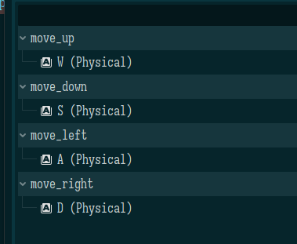

Godot 学习 02——第一个 2D 游戏
关于命名规范
首先确认一下命名规范，以后都按这个来：
- 文件名，资源：snake_case，
character_body.gd，character_body.tscn（script 和 scene 名字保持一致），player_idle.png - 类名和 Node 名，枚举名：PascalCase，
class_name CharacterBody,Camera2D,enum ElementType - 函数，变量，信号：snake_case，
func load_level()，var forward_speed,signal health_incremented - private，protected 函数，成员：_snake_case，
func _ready() - 常量：CONSTANT_CASE，
const MAX_SPEED = 200 - 枚举成员名：CONSTANT_CASE，
{WATER, FIRE}
Godot 像 Python 一样没有访问修饰符，甚至没有__开头时重设方法名的相关逻辑。约定_开头的字段、函数是“私有”的，但这仅是一种提醒。
关于 Godot 的协程
之前对协程建立的心智模型有点问题，我以为嵌套的协程会自动 yield from，这个是错误的，还是需要手动 await。
Godot 的协程其实更类似于 js 的 promise 而非 python 的协程或生成器，它有下面的特征：
- python 的协程必须使用 await，或者
asyncio.create_task去调度，单独调用一个 async 函数得到的协程，是不会被调度的，而 js 和 godot 的 promise，协程只要创建了就会被调度，无论是否 await - 一个函数只要不在顶层使用 yield 和 await，它就不是协程，它如果调用了协程函数，则协程函数中遇到 await 和 yield 时，它就立刻会返回，然后这个协程转交给 Godot 去调度，它继续做自己的事情
官方的实例教程唬人——它直接在_run 函数里写move_forward(100); turn_left(45)这样，让我以为协程会自动 yield from，但实际上不行，必须在顶层加await，经过测试能够发现，在官方教程中，这些操作不是立刻执行，而是在底层维护一个任务队列，在_run 函数执行完毕后才真正开始执行，太坑人了！测试方法是在方法开头末尾打印，检查它们是同时打印的。
下面的代码证明不在顶层 await 时，协程是遇到 await 就返回的：
1 | |
这个设计其实比我最开始的想法还灵活——我可以随意地创建协程去做并行任务了。
https://docs.godotengine.org/en/stable/getting_started/first_2d_game/index.html
进一步的官方教程，一个控制主角躲避随机直线运动的敌人的游戏，小时候玩过类似的 flash 游戏，但是那个是用鼠标控制移动的，这个是通过键盘。
这个因为是第一次从零开始做（还记得你第一次写编程项目是怎么个鸟样吗？这个可比编程项目复杂多了），所以亦步亦趋地来。
不过先打个预防针，这个项目还是太过简单了，只过了一些最简单的部分，我比较关注的状态机啊动画啊啥的都没有，怎么说呢，正视问题吧。

先看最终效果，把它当成原型的话，这里显然有三个元素——Player，Mob（敌人），HUD，然后 Main 作为根节点，总共四个 Scene。
就当我是在做实验，这里先猜测各个 Scene 负责的东西：
- Player 肯定负责显示、移动玩家
- Mob 肯定负责显示、移动敌人
- HUD 负责显示上方的 score 和中间的文字
上面的描述基本是肯定的，但是有一堆问题：
- 谁负责检查 Player 和 Mob 交互，检查碰撞？是 Main，还是 Player，还是 Mob？
- 谁负责生成和销毁 Mob，是 Main 吗？还是另外给 Main 添加节点干这个？
- 谁负责变更 HUD？是 Main 吗？
我先猜测一下：
- Main 负责检查 Player 和 Mob 是否碰撞（这个感觉不一定，另一个可能性是 Godot 可能能够检查两两角色是否碰撞并 emit 特定信号，这时候 Player 和 Mob 都可以监听这个信号，然后去通知 Main 之类的）
- Main 负责定时生成 Mob（或者在旧的 Mob 销毁时生成新 Mob），Mob 自己销毁自己
- Mob 销毁时通知 Main 去变更 HUD，Main 检查碰撞时去变更 HUD
其实我脑子里在想一个事情——我要如何判断什么时候用可重用的 Scene，什么时候用更具体的 Scene？要重用的 Scene，是要考虑仅在这个项目去重用，还是要考虑它在跨项目中重用？
Player
一般来说，一个 Scene 的根节点要反映这个对象期望有的功能，即这个对象是什么。在这里，为 Player 选个 Area2D，根据文档，Area2D 是一个 2D 空间，能检测 CollisionObject2D 进入和离开自己。Area2D 使用一个或多个CollisionShape2D和CollisionPolygon2D子节点去定义自己的形状，这个形状就是所谓的 hitbox。但这里肯定要先添加 Sprite 才能有形状用来参考。因为有动画，使用 AnimatedSprite2D，设置 SpriteFrame 资源去设置动画，动画似乎是可以分组的，一个 SpriteFrame 中可以有多个动画，它估计是可以使用代码切换或者使用编辑器去和状态机绑定之类的……？
Collision 是碰撞的意思，这个词估计会很常用。
使用的时候注意到 Godot 的界面和 Blender 一样，同一个快捷键在不同位置会有不同功能。
增加了动画后就需要增加 hitbox 了，使用 CollisionShape2D，具体 Shape 使用 CapsuleShape2D。
上面的疑问实际上已经解决了第一个了，虽然还没有开始编码：
Player 使用 Area2D，Area2D 在内部检测和其它的可碰撞对象是否有接触，如果有则 emit 相应信号，显然使用 Player 的人如 Main 要监听这个信号。
所以，感谢 Godot，Player 自己只用管好自己——它的脚本只需要关心自己的显示和动画即可，碰撞的问题，Area2D 和 Godot 底层想办法。
Player 的_process有一些事情要做：
- 检查玩家输入
- 移动 Player
- 展示合适动画
这个展示动画是用 Node 做的，但也可以在代码中做——在_ready后创建协程去干动画就行了。协程正适合用来干这种并行的、跨帧的事情。但这里不干这事儿。
按键映射
游戏中的按键映射，实际上就是把按键绑定到特定动作（名称）上，这个可以在项目设置的 Input Map 中配置，动作也可以随意创建新的，下面创建移动动作和绑定 wasd。当然只要不是粗制滥造，一般都会在游戏内提供按键绑定……unity 那种一个启动器来配置东西的现在好像也不多见了。

1 | |
处理了移动后，通过在 ready 中调用 hide 让 Player 默认隐藏（或者在运行时增加 Player）。
然后是关于碰撞，我们说，player 在检测到碰撞后自己就被击中了，从而做出一层抽象，这个抽象好做——定义一个信号 hit，在编辑器中绑定 Area2D 的body_entered信号（这里是自己绑定自己的信号，实际上在代码中做也行，反而更明显），然后在回调函数中 emit 这个 hit 信号。
1 | |
最后，提供一个方法供父节点去调用去重设 Player 的状态
1 | |
Mob
Mob 使用RigidBody2D——通过物理模拟去运动的物体。
Mob 增加 3 个子节点：
- AnimatedSprite2D：显然，动画，这里设置了动画的速度是 3FPS，这个是指每秒切换 3 帧，也就是说每帧 1/3 秒
- ollisionShape2D：显然，检查碰撞
- VisibleOnScreenNotifier2D：进入 screen 时 emit 一个信号，这个用来在离开屏幕时销毁 mob。
注意这里的VisibleOnScreenNotifier2D，这或许是 Godot 的某种设计哲学——使用组合去添加功能。
Mob 要配置它的 CollisionObject2D 的 Collision 的 Mask 不包含 1，这让 Mob 之间不会碰撞。
1 | |
这时候 F6 会发现它直接掉下去了，物理模拟嘛。
Main
上面的 Mob 其实还能再完善来着……怎么运动还没指定呢，难道要在 Main 中指定？至少提供一些“构造函数”做参数吧！？都一样其实。
Main 有一堆子 Node，以及 Player：
- Timer，取名 MobTimer，控制 Mob 的 spawn
- Timer，取名 ScoreTimer：控制分数增加
- Timer，取名 StartTimer：控制游戏的开始（前的延时）
- Marker2D，取名 StartPosition：指示玩家的起始位置。
- Path2D，取名 MobPath：围绕整个 viewport，用来在屏幕边缘去生成 Mob
- PathFollow2D，取名 MobSpawnLocation：“This node will automatically rotate and follow the path as it moves, so we can use it to select a random position and direction along the path.”
Marker 的作用就是指示一个可以被编辑器修改的位置。
然后是 Main 的脚本，这里做一个很 meta 的事情——把 mob 的类（PackedScene）作为参数传进来以达到一种解耦——我不知道我实例化的究竟是什么东西，我只实例化。
1 | |
直奔主题——怎么 spawn Mob？肯定是在 MobTimer 的回调里做，但是究竟怎么操作呢？
- 实例化一个 Mob
- 从 MobSpawnLocation 中任选一个位置，找到此时的位置和方向，把方向顺时针旋转 90 度（从而让它朝 viewport 里），然后再增加一点参差
- 再设置 Mob 的速度为线性速度，这个估计替代了原本的重力
- 添加 Mob 作为子节点
1 | |
想不到就已经能玩了这样，哈哈哈。
HUD
HUD 即抬头显示器 heads-up display，它是遮罩在游戏界面最顶层的。
该来点 UI 了。UI 使用 CanvasLayer，它不负责实际绘制，只保证自己的子节点绘制的东西不会被其它东西遮住。
需要展示上方的分数，中间的信息，中下的开始按钮。信息使用 Label，按钮使用 Button。
这里涉及到设置 Anchor，Size，Position，Font 等信息，这些信息来自类 Control。
代码……就那样，没必要贴了。
group
现在有一个问题——游戏结束的时候，所有 Mob 还活着，这时候希望 Mob 都不显示。如何同时销毁所有 Mob？使用 Group，Group 就像打在 Node 上的标签，后续能够根据该标签获取所有相应 Node 或对这些 Node 做相同操作。
Group 可以在运行时添加也可以在编辑器中添加；分组分为 Scene Group（仅在本 Scene 中可见）和 Global Group（全局可见）。问题在于，分组是通过字符串表示的，Scene Group 仅控制可见性，但没有作用域的区分，两个 Scene Group 同名的话会同时被操作到，显然妥善管理分组名是必要的。
这里给 Mob 增加 group mobs，然后在游戏结束时执行get_tree().call_group(&'mobs', &'queue_free')即可。
善后
ColorRect增加纯色背景，需要置于Main的第一个子元素保证它在Player和Mob之前绘制。
TextureRect用于图像等背景。
AudioStreamPlayer用于播放音频，这里用两个音频，一个播放BGM，一个播放死亡音乐。这玩意默认不是循环放的，可以配置成循环放。
增加下面的代码在死亡时（这await太性感了）：
1 | |
可以给开始游戏添加快捷键，比如Enter，这个在inspector中可以绑定。
本来想总结点啥的，但发现没啥可总结的。
这里发现，Node2D的transform属性处理的是变换矩阵，所以我可以拿godot去学线性代数，直接重设这个变换矩阵就行了，这个可交互性强一些，哈哈（但不知道箭头啥的怎么画目前）。
本博客所有文章除特别声明外，均采用 CC BY-NC-SA 4.0 协议 ，转载请注明出处！